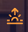
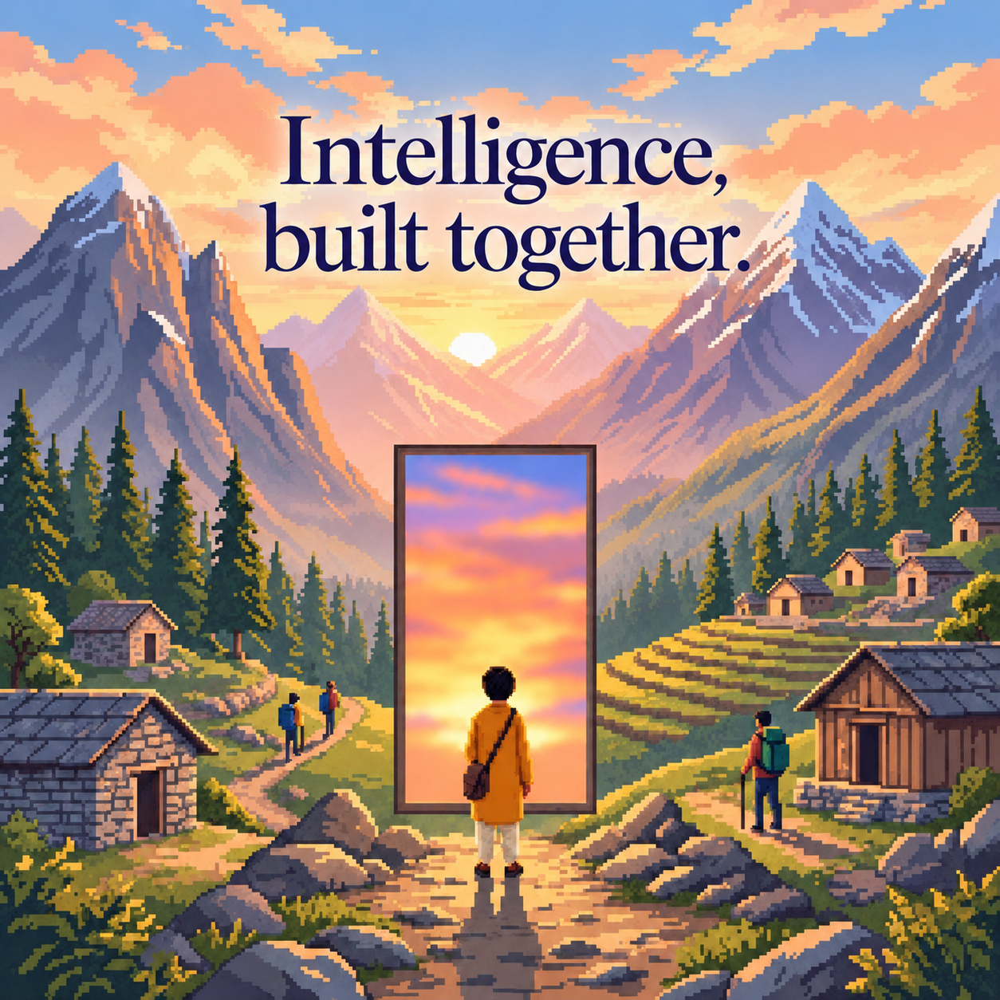

Messaging
A calm place for private conversations and community or event groups. Keep the people and context that matter close.
What should we make possible next?
Let's bring a few people together.

Indus OrbitThe General Intelligence Company of India
Connect with people. Turn ideas into useful work. Messaging and Terminal are your two starting points.
People, possibility and a better society.
Two offerings
One shared identity. Two focused places to do the work. The wider Orbit grows around them.
A calm place for private conversations and community or event groups. Keep the people and context that matter close.
A focused place to work with intelligence, explore an idea and move toward a useful result, with clear permissions and control.
Around the two
Events, communities, learning, programmes and research give connection and useful work a place to grow.
Gather around an idea, meet people and continue the conversation.
Extends MessagingStay connected through a shared place, purpose or piece of work.
Extends MessagingBuild understanding and put useful knowledge into practice.
Connects bothExplore opportunities and structured ways to get involved.
Connects bothFind ideas, evidence and perspectives that help the next step.
Supports Terminal and shared workCarry a worthwhile intention toward something others can use.
Connects bothThe way we work
Find one another with purpose. Make it easy to understand where you belong and how to contribute.
Make more together. Combine human judgment, shared effort and useful intelligence.
Let the benefit reach further. Design for different people, places, abilities and starting points.
Start with a conversation or explore what you can build. You do not need to learn the whole platform first.
01 / Messaging
Private messages between accepted connections, plus community and event groups. A familiar, lightweight place to keep the conversation going.
Illustrative product surface
Private conversation / community group / event discussion
02 / Terminal
A focused working environment for useful intelligence. Make the task clear, understand the permissions and keep the person in control.
Start with the task. Bring advanced models, tools, approvals and receipts into view when they become relevant.
Local review download · Source ZIP, not an installer · Unsigned and unpublished. A public install button will require a verified release artifact and owned download URL. Version and checks
Extensions of Messaging and Terminal
A complete company overview without a crowded menu. Choose the context that matters; discover the detail when you need it.
Discovery, invitations, free guest registration and eligible attendee discussion.
Public guestsRestricted events explicitChapters, missions, connections, conversation and ongoing contribution.
Messaging contextAcademy, practical resources and learning progress, reached through a simple next step.
Connects bothThe existing Instagram application campaign and the opportunity catalogue need clearly separate descriptions and current availability.
Campaign recorded / status to verifySpecific ideas, sources and work. Model comparisons belong here as reviewed resources.
Evidence, not unsupported claimsModel access, costs, capabilities and receipts support Terminal work. Availability must remain accurate.
Explicit setup and governanceThe General Intelligence Company of India
Indus Orbit brings meaningful connection and useful intelligence into the same purpose. Messaging helps people find and work with one another. Terminal helps carry intention into useful action. The wider community gives both meaning.
A worthwhile person, conversation or introduction.
Knowledge and effort that become more useful together.
Benefits that reach beyond the person already at the centre.
A familiar frame opens onto what someone could learn, make or contribute. Different people and places can carry the metaphor. Earth-rooted settings, human agency and shared benefit keep it coherent; the story does not depend on planets or extraterrestrial worlds.

The selected campaign picture keeps the approved quote crisp. The world, person and frame stay sharp; only the opening is dreamlike. It is a separately named generated derivative. The original remains preserved, and essential website wording stays accessible as live text.